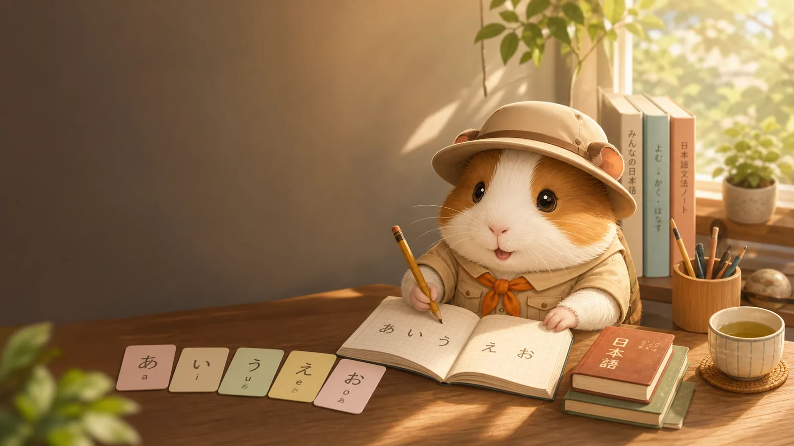

Read kana daily
Spend a few minutes moving between the chart and flashcards until each sound feels familiar.

Kana, grammar, vocabulary
Your free Japanese Study Room for kana, grammar, vocabulary, useful phrases, and quick practice.
Reading foundation
Sentence patterns
Word bank
Real sentences
Scene dialogues
Study path
Spend a few minutes moving between the chart and flashcards until each sound feels familiar.
Pick one grammar card, read every example, then make your own sentence by swapping nouns or verbs.
Filter the vocabulary list by category and say each word aloud with the kana reading.
Use the practice panel for a quick check, then return to the section that gave you trouble.
Build confidence here, then explore the learning products when you are ready for a more focused next step.
Quick check
Answer a few bite-sized prompts, then jump back into the kana chart or vocabulary list whenever something feels fuzzy.